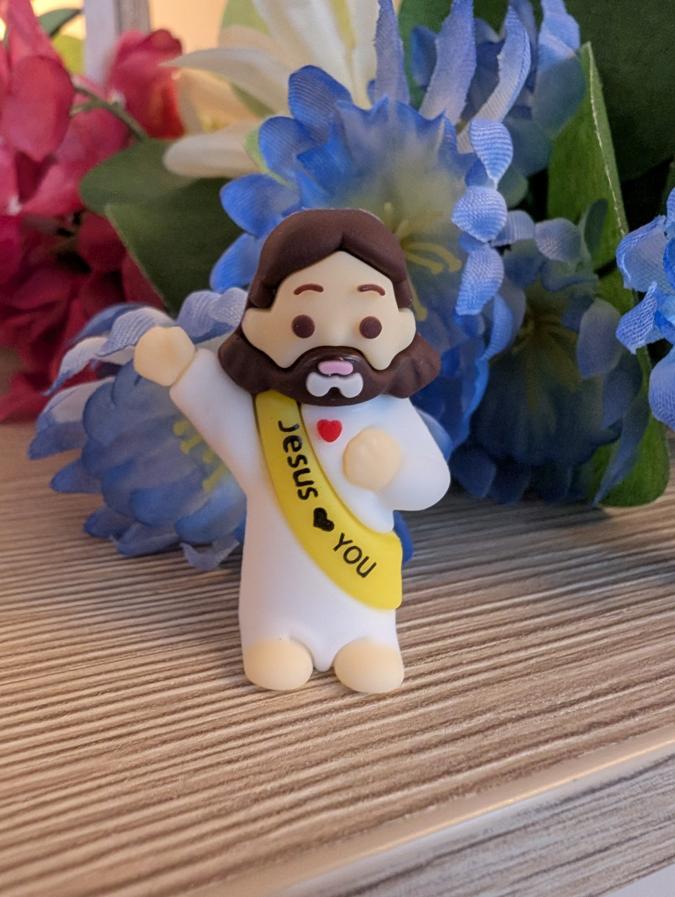

Deel je vondst
Als je wil, mag je jouw vondst altijd delen via onze socials. Zo kunnen wij mee genieten van waar onze mini Jezusjes terechtkomen en welke glimlach ze onderweg misschien hebben gebracht.
Mini Jezusjes
Proficiat met je vondst! We hopen dat dit kleine Jezusje een beetje hoop en vreugde heeft gebracht, en misschien ook een glimlach op je gezicht.
We zouden het superleuk vinden als je ons tagt via @deblockertjes. Je mag natuurlijk ook zelf een kort filmpje maken en ons daarin taggen.

Als je wil, mag je jouw vondst altijd delen via onze socials. Zo kunnen wij mee genieten van waar onze mini Jezusjes terechtkomen en welke glimlach ze onderweg misschien hebben gebracht.